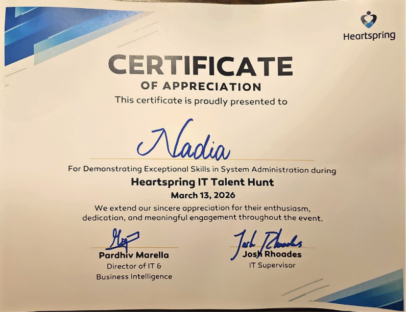
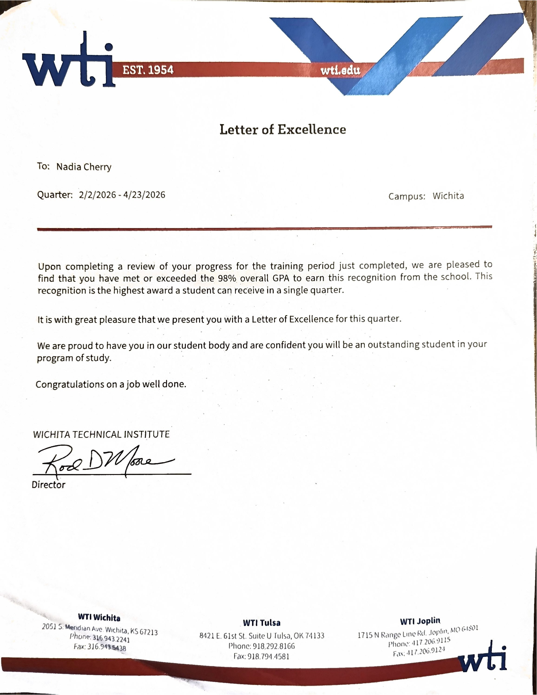
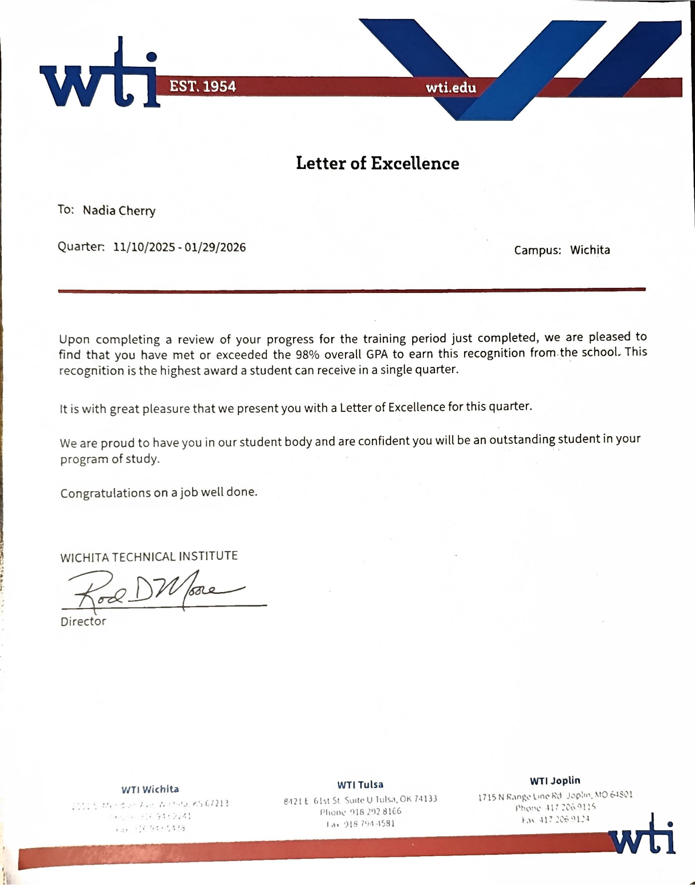
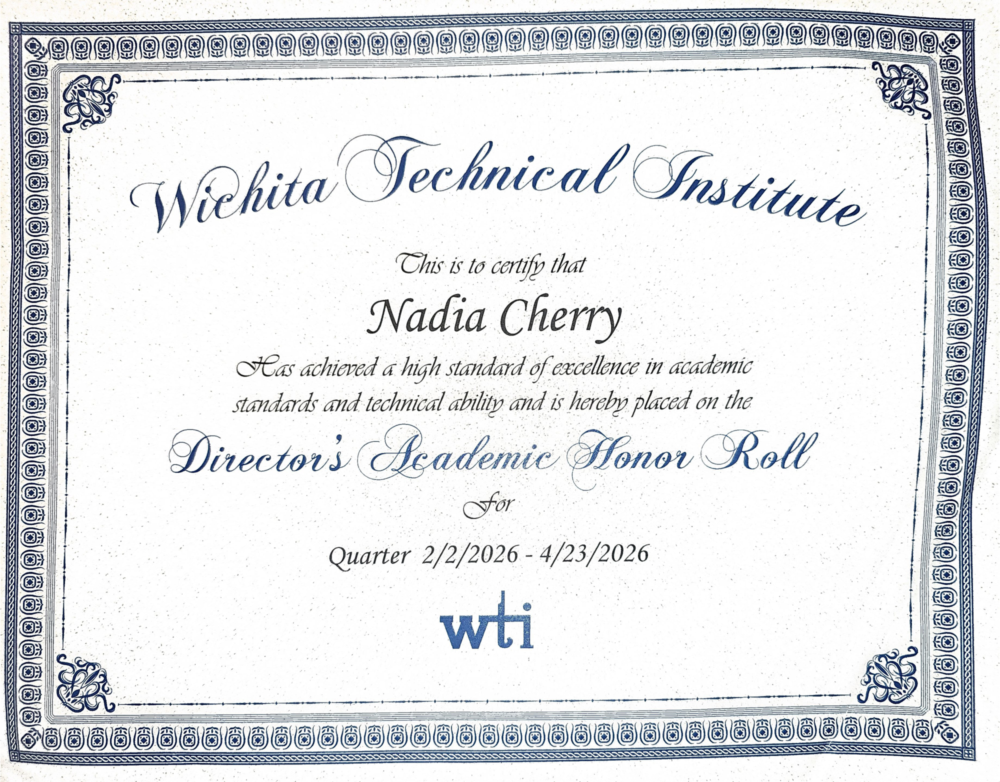
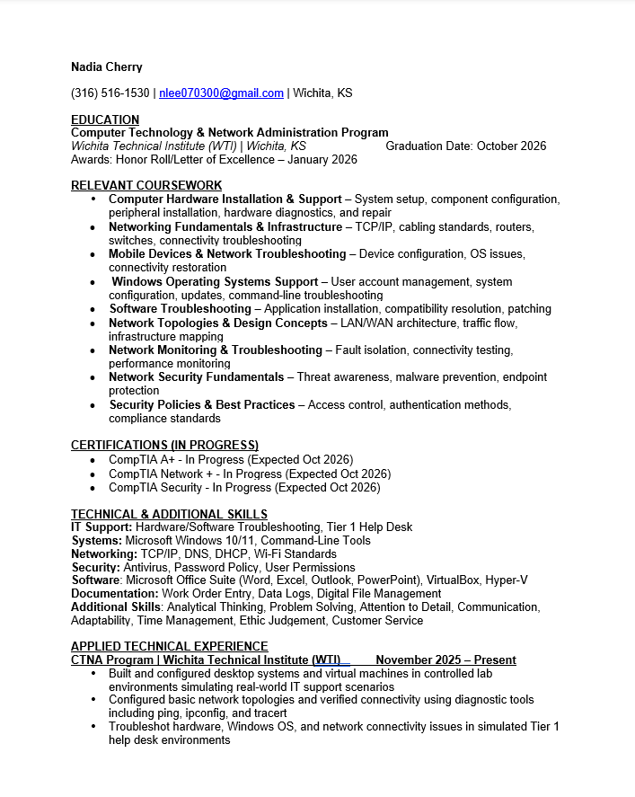

ABOUT ME
I enjoy solving problems, understanding how technology works, and building the skills to protect it.
I'm currently an Enterprise IT Support Professional supporting one of the world's largest aerospace companies. Every day I help coordinate enterprise device refreshes, troubleshoot Windows systems, manage deployment schedules, document hardware assets, and support end users across the organization.
Beyond technical support, I'm trusted to help coordinate daily operations, assist newer team members, and work alongside technical leads to keep large-scale deployment projects running smoothly. Those experiences have strengthened not only my technical abilities but also my communication, documentation, and leadership skills.
Outside of work, I continuously invest in my own growth. Technology has always been something I wanted to understand not just use. I built my own gaming computer from individual components, troubleshoot my own hardware, enjoy networking concepts, and spend much of my free time expanding my knowledge through labs, certifications, books, and personal projects.
MY JOURNEY
Every certification, project, and opportunity represents another
step toward becoming a Cybersecurity professional.
Began my IT education while building a strong
troubleshooting foundation.
Enterprise IT Support helping coordinate
large-scale hardware deployments.
Helping coordinate an 11-person deployment team
while supporting enterprise operations.
Completing my first professional IT certification.
My ultimate career goal protecting organizations
through investigation and defense.
FEATURED PROJECTS
Support enterprise-wide hardware deployments by coordinating scheduling,
asset tracking, Windows device preparation, documentation,
Active Directory resources, and end-user support.
Windows • Active Directory • Excel • Microsoft Bookings • SharePoint
Designed and assembled my own desktop computer from individual components.
Diagnosed hardware issues during the initial build and successfully
troubleshot incorrect fan connections before completing the system.
Hardware • BIOS • Windows • Diagnostics • Troubleshooting
Designed and developed my own professional portfolio using HTML, CSS,
JavaScript, GitHub, GitHub Desktop, and Visual Studio Code.
HTML • CSS • JavaScript • GitHub
CORE TECHNICAL COMPETENCIES
My experience spans enterprise device deployments, Windows administration,
networking, cybersecurity fundamentals, and modern development tools.
Select a category below to explore the technologies I use in real-world
environments.
Enterprise Windows administration, Active Directory,
Microsoft 365, enterprise deployments, and technical leadership.
Network administration, TCP/IP, troubleshooting,
routing, switching, and enterprise connectivity.
Windows administration, Linux fundamentals,
PowerShell, virtualization, and enterprise support.
Security fundamentals, authentication,
risk awareness, and defensive technologies.
Enterprise hardware deployment,
diagnostics, imaging, repair, and workstation support.
Front-end development, programming,
Git version control, and scripting.
Cloud computing, virtualization,
Azure fundamentals, and virtual environments.
Leadership, communication,
troubleshooting, and continuous improvement.
Information Technology Program
Current Learning
HONORS & RECOGNITION
Throughout my IT education, I've consistently been recognized for
academic excellence, technical ability, and hands on performance.
These recognitions reflect my commitment to continuous learning,
professional growth, and technical excellence.

March 13, 2026
Awarded a Certificate of Appreciation for demonstrating
exceptional System Administration skills during the
Heartspring IT Talent Hunt.

February – April 2026
Awarded for earning a 98%+ GPA during the academic quarter,
recognizing exceptional academic achievement.
February – April 2026
Recognized for outstanding academic performance and
technical excellence.

November 2025 – January 2026
Earned a second Letter of Excellence by maintaining
a 98%+ GPA during consecutive academic quarters.

November 2025 – January 2026
Recognized for consistent academic achievement and
dedication to technical education.
PROFESSIONAL RESUME
The resume below is the exact document I submit to employers.
Feel free to preview it online or download a PDF copy.

Last Updated • July 2026
CONTACT
I'm currently open to Enterprise IT, Systems Administration,
and Cybersecurity opportunities. Whether you're interested in
discussing an open position, networking professionally, or
collaborating on a project, I'd love to hear from you.
Connect with me professionally. cherry.nadia73@gmail.com (316) 469-5718
📍 Wichita, Kansas
Career Roadmap
Started WTI
Boeing
Technical Team Lead
CompTIA A+
Cybersecurity
Technical Projects
Enterprise Device Refresh
Custom Gaming Workstation
Portfolio Website
Technologies I Work With
🏢 Enterprise IT
🌐 Networking
🖥️ Operating Systems
🛡️ Cybersecurity
🖥️ Hardware
💻 Development
☁️ Cloud & Virtualization
⭐ Professional Strengths
Building a Strong Technical Foundation
Wichita Technical Institute
Professional Development
Awards & Academic Excellence
Heartspring IT Talent Hunt
Letter of Excellence

Director's Academic Honor Roll
Letter of Excellence
Director's Academic Honor Roll
Resume
Let's Connect
💼 LinkedIn
📧 Business Email
📱 Business Phone